上一章
今章介绍各种朋友聚会。在国外的单身生活，朋友聚会不少。
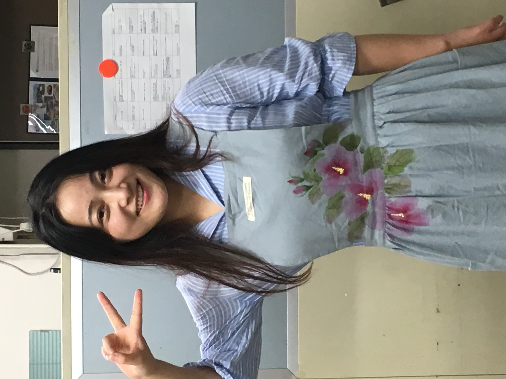
这是2019年10月靓靓回国时，她很爱美，很爱艺术，当时我在韩国买了一条很漂亮的手工围裙给她，这是我的办公室。
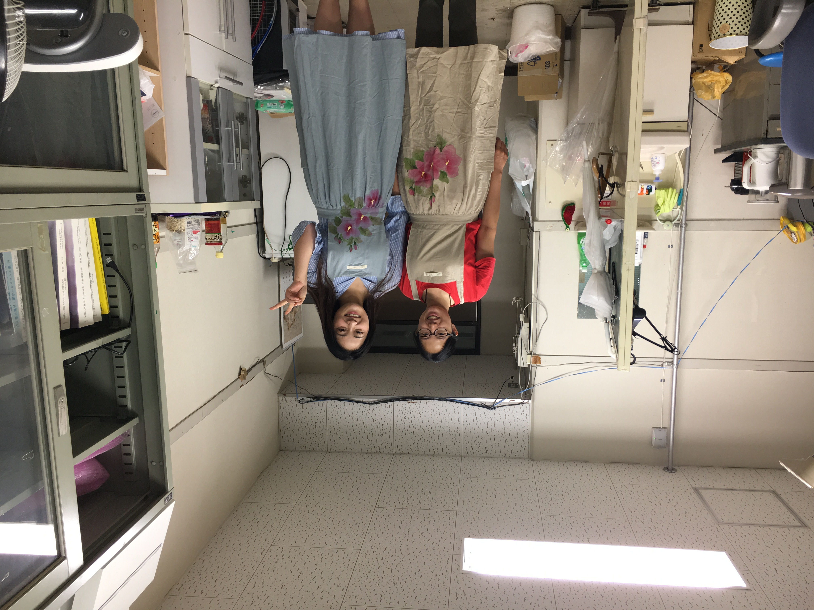
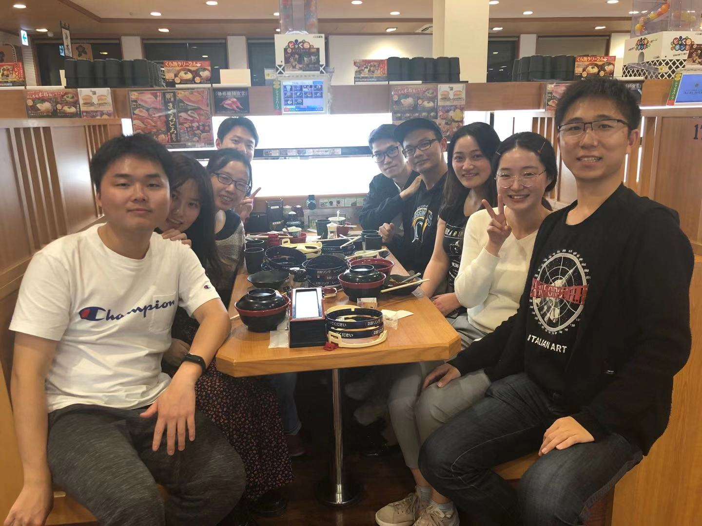
这是11月底大伙一起去吃寿司送别。
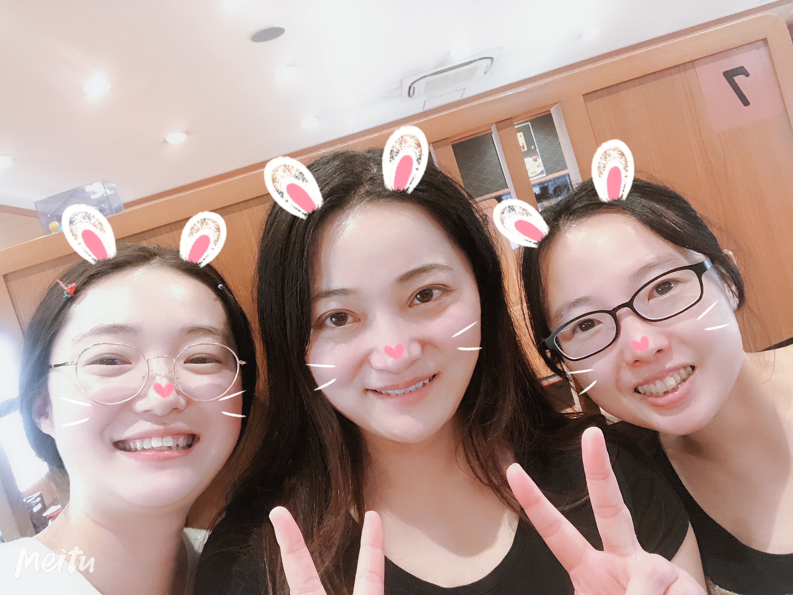
美颜照
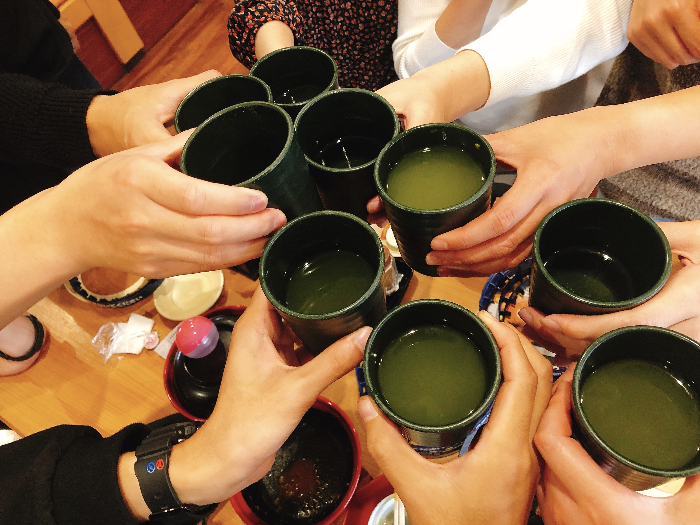
干杯
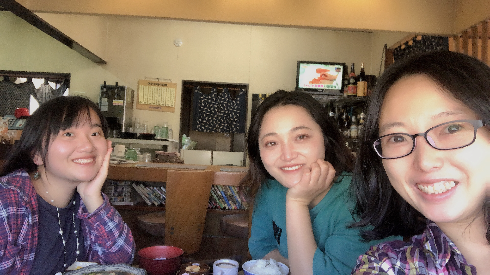
吃寿司时花花不在，后来在学校附近吃的送别午餐。
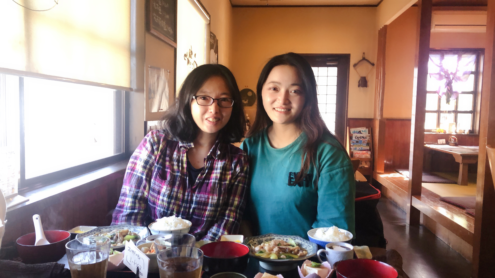
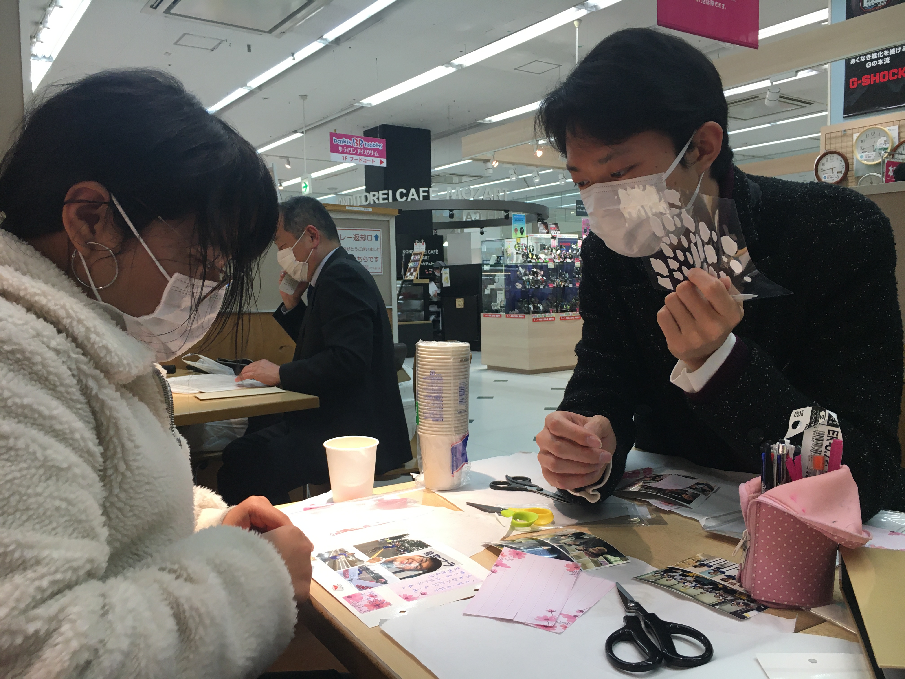
2020年3月底，苏冠东学长毕业快离开西条，我和花花及屈在youme town一同做相册给他，idea来自靓靓送给我的生日礼物。
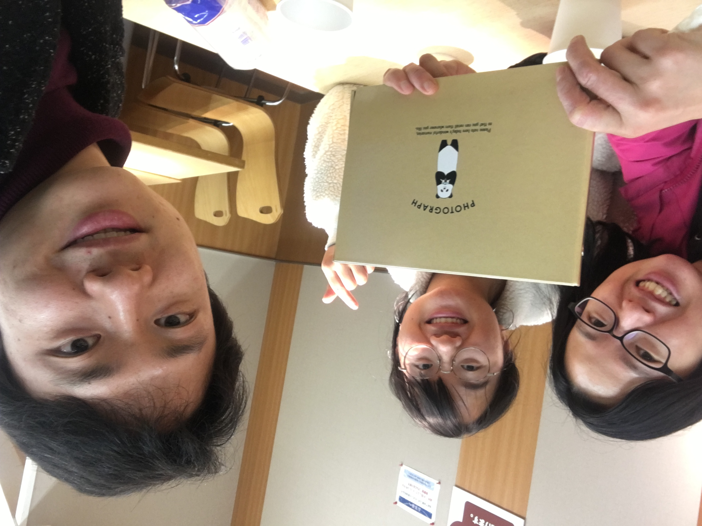
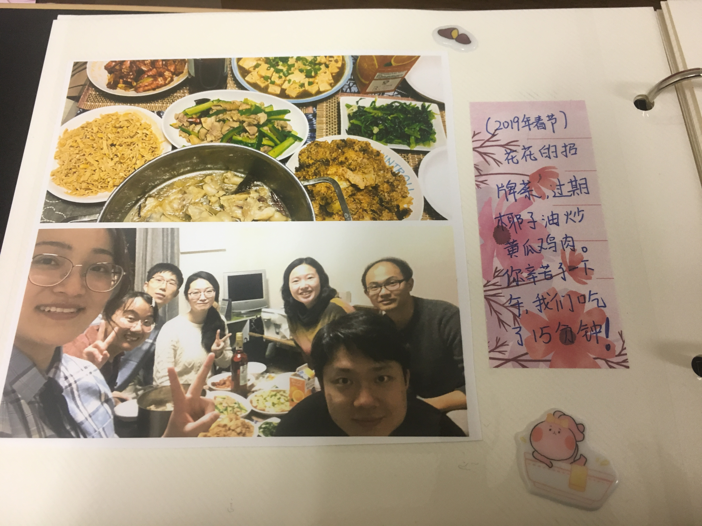
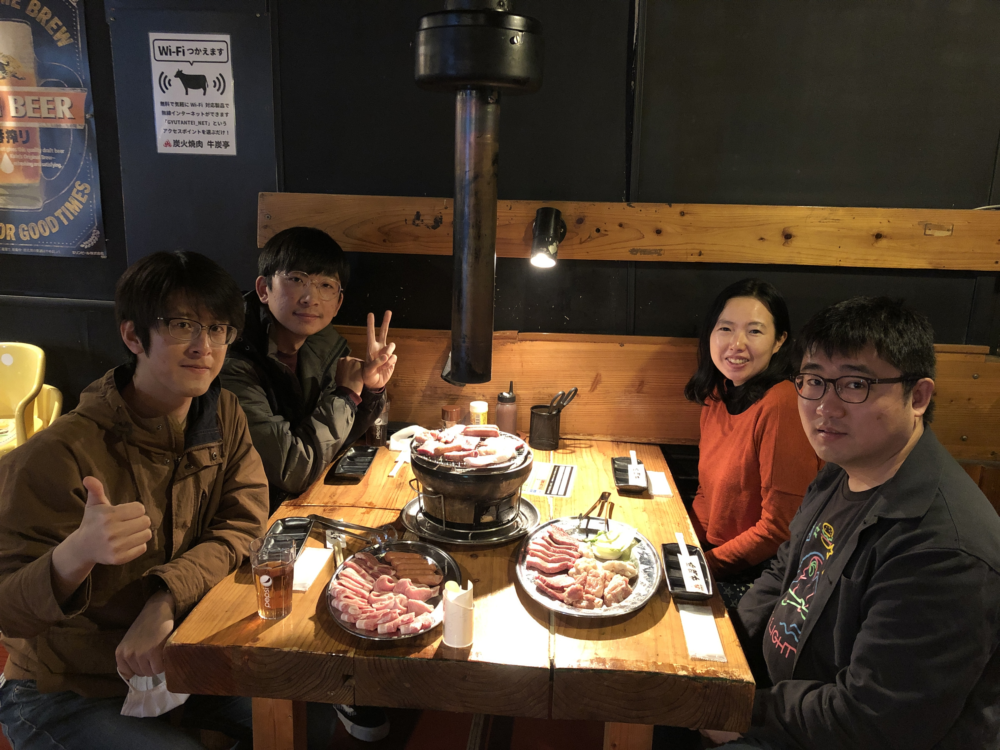
2021还是2022，南岳离开前聚会。

这是2022年9月花花来西条，我们在役所“展望台餐厅”吃饭。
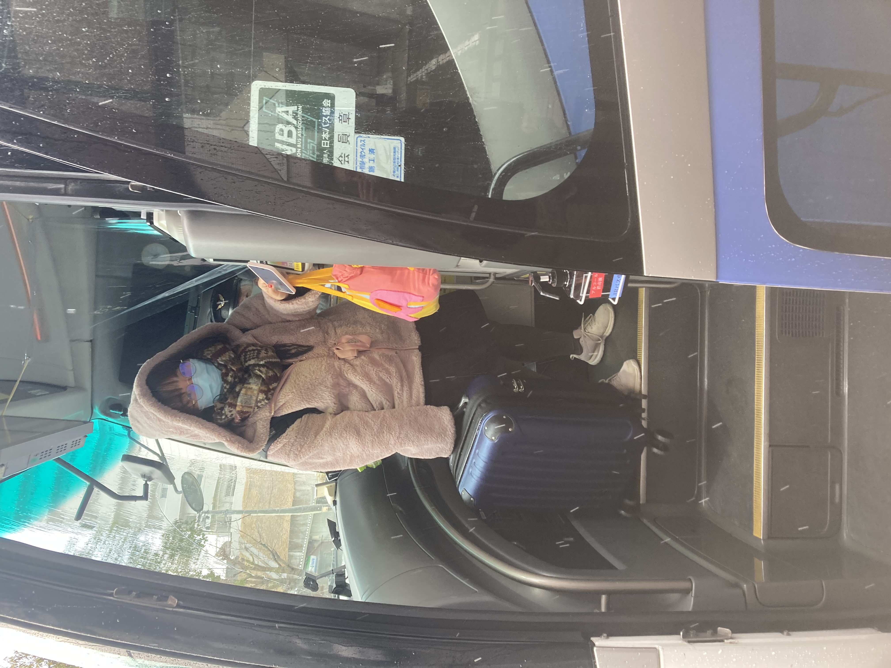
她从我家里楼下车站离开返程时，再见了，花花！
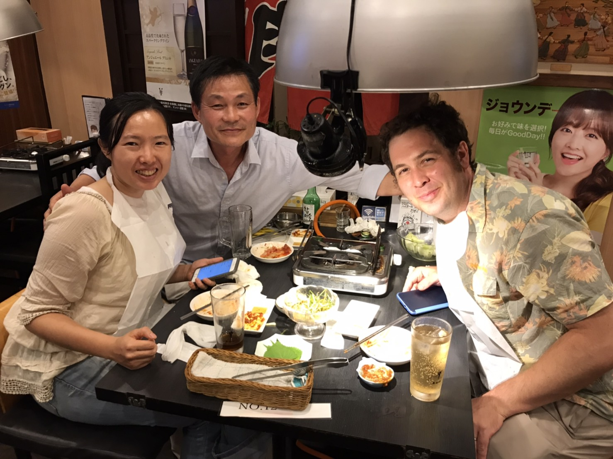
这是美光工作的韩国大哥Brian Kim，某次在Apsaras吃饭遇到他，他很主动和人聊天，后来约过出来一起吃饭几次，他每次都请我，后来不知道为什么就联系不上了，希望他一切安好。
下一章